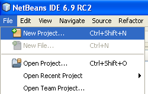
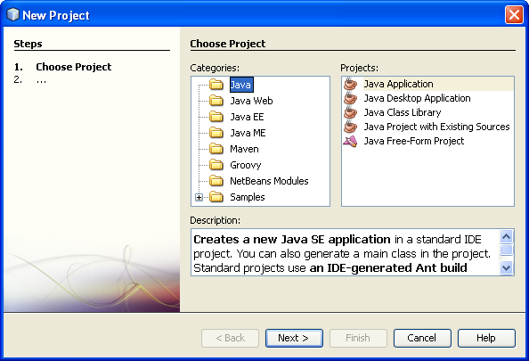
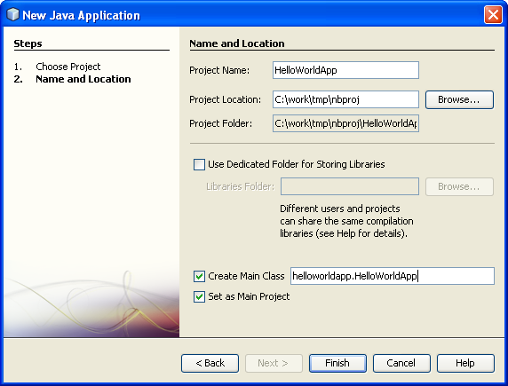
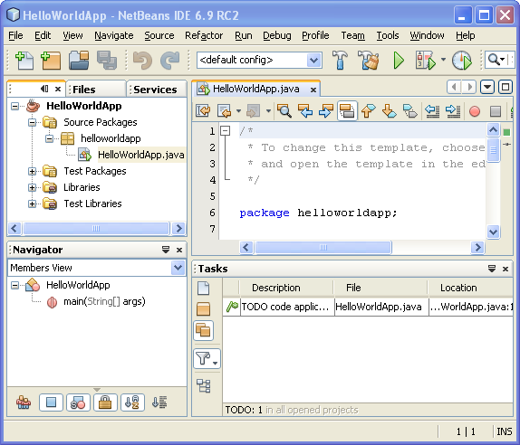
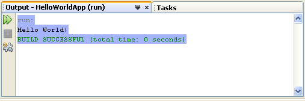
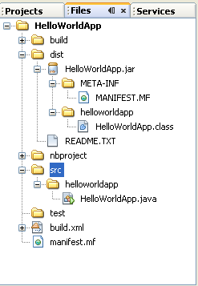

NetBeans IDE にようこそ!
このチュートリアルでは、簡単な「Hello World」Java コンソールアプリケーションの作成を通して、 NetBeans IDE のワークフローを簡潔に紹介します。このチュートリアルを終了すれば、IDE でアプリケーションを作成および実行する方法に関する全般的な知識が身に付きます。
このチュートリアルを完了するのに要する時間は 10 分未満です。
このチュートリアルを終了すると、ドキュメントのページからリンクしている「学習」に進むことができます。学習の各チュートリアルは、さまざまな種類のアプリケーションに利用できる IDE の機能とプログラミング手法を幅広く網羅しています。このチュートリアルを省略し、「Hello World」アプリケーションを作成しないで学習のチュートリアルに進んでもかまいません。
目次

このチュートリアルを完了するには、次のソフトウェアとリソースが必要です。
| ソフトウェアまたはリソース | 必須バージョン |
|---|---|
| NetBeans IDE | version 6.9 以降 |
| Java Development Kit (JDK) | version 6 または version 7 |
IDE プロジェクトを作成するには、次の手順に従います。


HelloWorldApp と入力します。helloworldapp.HelloWorldApp と入力します。
IDE でプロジェクトが作成され、表示されます。次のコンポーネントが表示されます。
HelloWorldApp ファイルが開いています。

「新規プロジェクト」ウィザードで「主クラスを作成」チェックボックスは選択されたままにしたので、スケルトン主クラスが自動的に作成されています。スケルトンコードに「Hello World!」メッセージを追加するには、次の行を
// TODO code application logic here
次の行に置き換えます。
System.out.println("Hello World!");
「ファイル」>「保存」を選択して、変更内容を保存します。
ファイルの内容は次のコードサンプルのようになります。
/*
* To change this template, choose Tools | Templates
* and open the template in the editor.
*/
package helloworldapp;
/**
*
* @author <your name>
*/
public class HelloWorldApp {
/**
* @param args the command line arguments
*/
public static void main(String[] args) {
System.out.println("Hello World!");
}
}
IDE の保存時にコンパイル機能により、IDE で実行するためにプロジェクトを手動でコンパイルする必要はありません。Java ソースファイルを保存するときに、IDE は自動的にコンパイルを行います。
「保存時にコンパイル」機能は、「プロジェクトプロパティー」ウィンドウで無効にできます。プロジェクトを右クリックして「プロパティー」を選択します。「プロパティー」ウィンドウで、「コンパイル」タブを選択します。最上部に「保存時にコンパイル」チェックボックスがあります。「プロジェクトプロパティー」ウィンドウでは、プロジェクトライブラリ、パッケージング、構築、実行などの、プロジェクトに関する多数の設定を行えます。
プログラムを実行するには、次の手順に従います。
次の図に示すような出力が表示されます。

お疲れさまでした。作成したプログラムは正常に動作します。
コンパイルエラーがある場合、ソースエディタの左右のマージンが赤いグリフでマークされます。左マージンのグリフは、対応する行のエラーを示します。右マージンのグリフは、表示されていない行のエラーも含め、エラーがあるファイルの領域すべてを表示します。エラーマークの上にマウスポインタを置くと、エラーの説明を表示できます。右マージンのグリフをクリックすると、エラーのある行に移動できます。
アプリケーションを記述し、テスト実行すると、生成物を削除して構築コマンドを使用して配備するアプリケーションを構築できます。「生成物を削除して構築」コマンドを使用すると、IDE は次のタスクを実行する構築スクリプトを実行します。
アプリケーションを構築するには、次の手順に従います。
「ファイル」ウィンドウを開き、HelloWorldApp ノードを展開して、構築出力を表示できます。コンパイルされたバイトコードファイル HelloWorldApp.class は、build/classes/helloworldapp サブノード内にあります。HelloWorldApp.class を含む配備可能な JAR ファイルは、dist ノード内にあります。

使用しているオペレーティングシステムで、コマンド行からアプリケーションを実行する方法についての詳細は、Java チュートリアルの「"Hello World" アプリケーション」のレッスンを参照してください。
これで、IDE でもっとも一般的なプログラミング作業を実行する方法を習得しました。
Java アプリケーションを開発するための IDE のワークフロー (クラスパス管理を含む) についての詳細は、「一般的な Java アプリケーションの開発」を参照してください。
Java デスクトップアプリケーションの配備についての詳細は、「Java デスクトップアプリケーションのパッケージ化と配布」を参照してください。
開発しているアプリケーションの種類に固有の情報を調べるには、その種類のアプリケーションに関する NetBeans IDE の学習のチュートリアルを利用してください。各チュートリアルでは、基本的な内容から高度な内容までを網羅する一連のチュートリアルとガイドを示しています。次の学習のチュートリアルがあります。